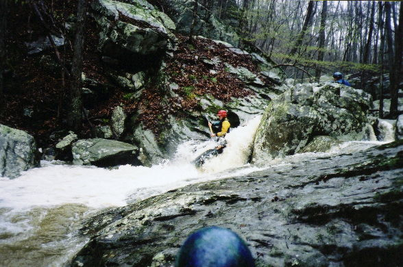

| Campbell Mill is a simple 9' waterfall. That opening on river right may have been where the old wheel was located. | |
| Greg Lawrence prepares to meet undercut #1 on the easier upper section. A few of us walked it after he and Shane proved it could be done. | |
| Bert Harris on a slide towards the top | |
| Shane Hulsey runs the top part of the 1st tough rapid in the steep section. | |
| Bert at the bottom of the same rapid | |
| Greg on a tight one. Three of us walked this while Shane and Greg had excellent lines. |
|  | The bottom of a twisting rapid just after the sieve |
| Greg runs the next drop trying to avoid the rock at the bottom. He did. We all did. Some of us got a bit turned around. | |
| Dave Branham in the top part of the long continuous section | |
| Dave at the bottom of the slide at Powell Mill, heading towards the falls. | |
| Bert says "Oh No!"
Or maybe he's just yawning. |
|
| Greg shows his nads/skills by running a tough drop the only way it could be done. He and Shane had just moved that log on the lower right of the picture so that it blocked the other option...this gave some of us a good excuse to walk | |
| Shane at the underwater river / cave cliff.
The cliff giveth, the cliff taketh away.
Below here there was another big one that had no acceptable line, plus some other good runnable stuff. |